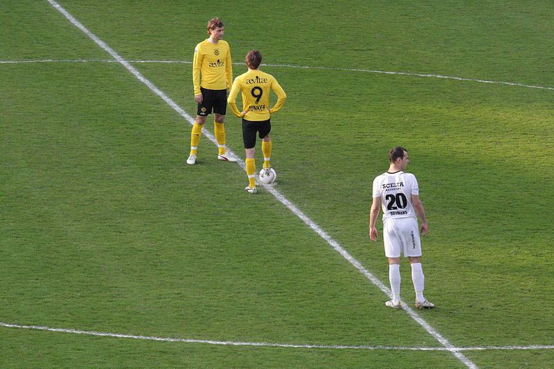
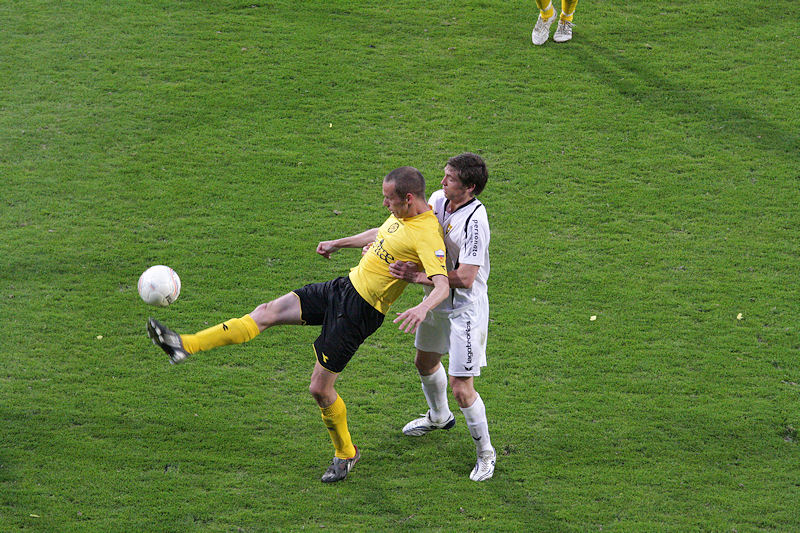

Venlo is de enige club buiten Ajax en Feyenoord die het gastenvak helemaal
vol maakt.
Mooi doek.
Roda pareerde dit met vlaggetjes.
Aan beide zijden veel geel/zwarte slierten.

Ludiek doekje op lower left west.

Kick-off met Junker en Skoubo. VVV wisselde van helft. Need I say more.....
Snelle treffer door Janssen: 1-0, (3').
Kruiswijk in duel met Boymans.
Gejat spandoek van VVV dat overigens netjes terug werd gegeven.
Curieuze treffer van Saeijs. Doelman Begois bokst de bal via het achterhoofd
van de verdediger in eigen doel: 2-0, (21').
Nol Hendriks' N'kume scoort middels een lobje 2-1, (23').
Is dit een voorteken...?
Yes, it is! 2-2 door Garcia die een klutsbal binnenwerkt.
Vrolijke Venlonaren.
In de tweede helft zeilt het Aevitae-doek over de oost.
Janssen in duel met Boymans.

Bodycheck voor Saeijs.
Junker schuift de bal voorbij Begois: 3-2, (64').
Schot van Garcia ketst tegen de lat.
Skoubo schiet voorbij Begois in de rechter beneden-hoek: 4-2, (83').
Opdracht volbracht!
Remunj, Herkebosj, Beezel.
Vrolijke Fotzers.
Koffieboer probeert Kruiswijk tot contractverlenging te bewegen.
FIP Venlo.
Lachambre temidden van zijn groupies. Behalve Kruiswijk en Lachambre werd de
Kickoff bezocht door De Fauw en Sutchuin-Djoum.